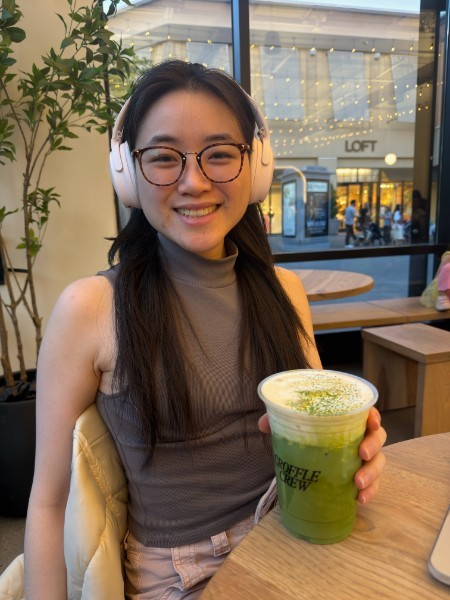
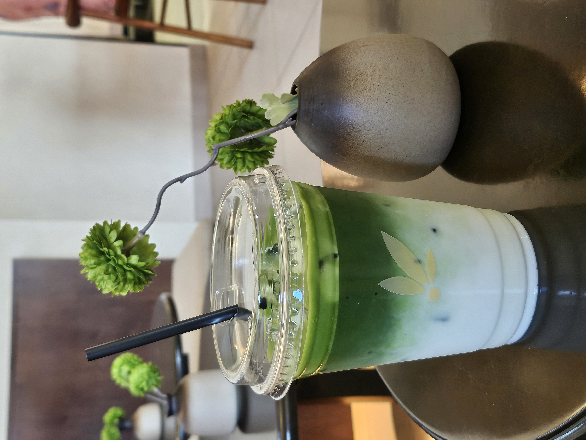
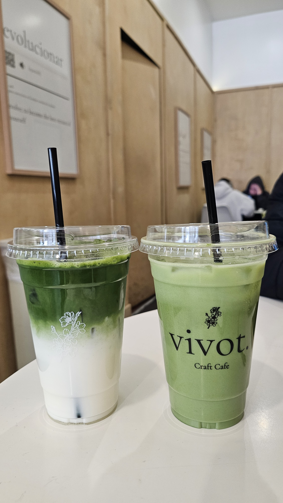
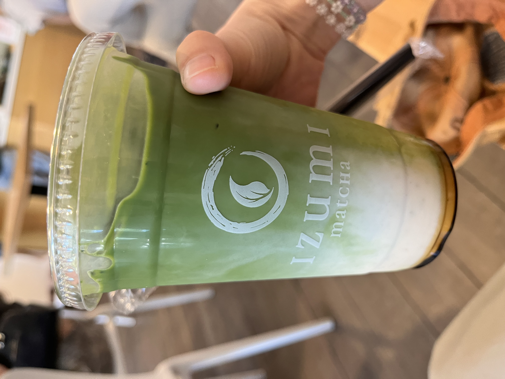

A little about me.

I enjoy figuring out how things work, making processes more efficient, and creating intuitive, enjoyable user experiences. With a bachelor's degree in marketing, a master's in computer science, and a background in product design, I've worked across HP, IBM, Splunk, and Equifax, exploring everything from AI search strategy and decision intelligence to customer discovery and UX design.
From improving civic tech onboarding at Code for America to prototyping generative AI solutions at IBM, I've explored how thoughtful technology can make a meaningful difference. I've also helped students navigate their academic and career paths from high school to post-graduate.
Whether you'd like to chat about careers, exchange ideas, or just talk over matcha, I'd love to connect. Feel free to reach out on LinkedIn!
I'm drawn to problems that bring together technology, business, and design. I believe the best solutions combine data-driven decision-making with empathy to create experiences that are effective, intuitive, and equitable.
Business & strategy
I enjoy understanding the bigger picture, breaking down ambiguous problems, and figuring out what is worth building and why. I'm interested in how ideas translate into real-world value and their impact on users.
- Jira
- Aha!
- Confluence
- Agile / Scrum
- Kanban
- Market analysis
- Industry analysis
- Google Analytics
- Excel
- Power BI
- Social & digital marketing
Technology
I like understanding what's possible with technology and how we can apply it to solve meaningful problems. I'm especially interested in AI search, emerging technologies, and making complex systems enjoyable and more accessible.
- Python
- SQL
- R
- Java
- C++
- Swift
- JavaScript
- HTML/CSS
- Angular
- Node.js
- MongoDB
- Google Cloud
User experience
Good technology isn't just about what it can do. It's also about how people experience it. I enjoy thinking about usability, human behavior, and how thoughtful design can make products more intuitive and enjoyable.
- Figma
- Sketch
- Adobe XD
- InVision
- InDesign
- Miro
- Mural
- Wireframing
- Prototyping
- Storyboarding
- WordPress
- Wix
In my free time, I love crafting, playing boardgames, and trying new matcha cafes.
I love crocheting, learning how to hand sew, and playing puzzles like Sudoku and Wordle.
- 01I'm drawn to activities that combine creativity, problem-solving, and a little bit of experimentation.
- 02I'm always exploring hobbies and adding new projects to my checklist.
- 03Lately, I've also been learning how to play tennis and vibe coding side projects.



Currently into
A little corner for what I've been learning lately.
Little things I love.
This site is a collection of the things I've worked on, learned, and enjoyed along the way.